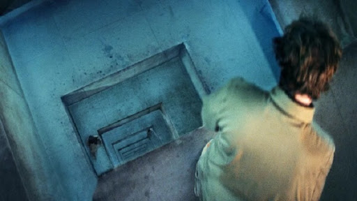
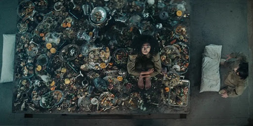

Platform (2009)
Platform (2019), İspanya yapımı gerilim, korku ve bilim kurgu türü bir film. İlk dakikalarından izleyicinin dikkatini çekmeyi başarıyor. Neredeyse her saniyesi sizi şoke edecek bir yapım da diyebiliriz. 2020'de Netflix’te de yayımlanmaya başlandı. Film bir tür distopya düzenini anlatıyor. Çok anlam içeren ve farklı şekillerde yorumlanabilecek açık bir yapıt da diyebiliriz.Platform (2019) filmi konusu Filmin ana karakteri Goreng uyanıyor ve kendisini beton bir hücrede buluyor. Hücre numarası ise 48. Hücresini paylaştığı bir kişi daha var. Hücrenin ortasında ise büyük bir kare delik. Bu delikten yukarıda ve aşağıda olan hücrelerin sakinleri görülebilir. Burası dikey bir yapı en üstten en alta doğru onlarca hücre var. Bir tür hapishane ama ana karakterin buraya kendi isteği ile geldiğini öğreniyoruz. Burada altı ay geçirecek, karşılığında ise bir diploma alacak. Diğer kişilerin de benzer hikâyeleri var. Herkes bu “merkeze” girdiğinde yanına bir şey almasına izin verirler. 
Yapının en önemli özelliği ise hücrenin ortasındaki boşluktan her gün bir platformun yukarıdan aşağıya doğru hareket etmesi. Her katta durur ve buradaki iki kişi platformdan yemek yerler. Sadece verilen sürede yiyebildiklerini yerler. Almak, saklamak yasak. Alırlarsa hücre ya aşırı soğur ya da aşırı ısınır ve onları öldürür. Bu yiyecek platformu en tepeden başlar. Bu aynı zamanda şu demek, alttaki katlar bir öncekinin artıklarını yerler. Daha aşağılara gittikçe ise yemekler hem azalır hem de daha berbat halde gelir.

Bu film birçok açıdan yorumlanabilir. Bir açıdan mevcut toplumumuzdan izler görülebilir. Çünkü en üst kattakiler her türlü yiyeceğin keyfini çıkarırken, en alt kattakiler bir birini yemek zorunda. Elit sınıfın sefa sürmesine karşı toplumun alt kesiminin içler acısı durumu gibi. Diğer yandan bu yapıyı hazırlayan kişilerin platformdaki yiyecekleri ne kadar özenerek hazırladığını görüyoruz. Gerçekten mükemmel bir sofra kuruyorlar. Tabii ilk kattan başlayarak hunharca yiyip içme başlıyor. Kimse aşağıdakini düşünmüyor. Aslında bir gün kendilerinin de alt katlarda olabileceğini biliyorlar. Buna rağmen üst kat hiçbir zaman alt ile konuşmaz. Eğer yapı bir toplum eleştirisi ise hücreler arasındaki ilişki çeşidi de bir birey eleştirisi olarak görülebilir. br
Sonuç itibariyle her izleyicinin kendi yorumunu yapabileceği, kendince anlam verebileceği, şoke edici ve çarpıcı bir film.
Platform (2019)
Özgün adı: İspanyolca “El Hoyo” (Delik)Yönetmen: Galder Gaztelu-Urrutia
Senaryo: David Desola
Oyuncular: Ivan Massague Antonia San Juan Zorion Eguileor Emilio Buale Alexandra Masangkay
Tür: Korku, Gerilim, Distopya, Bilim Kurgu
Yapım: İspanya - 2019